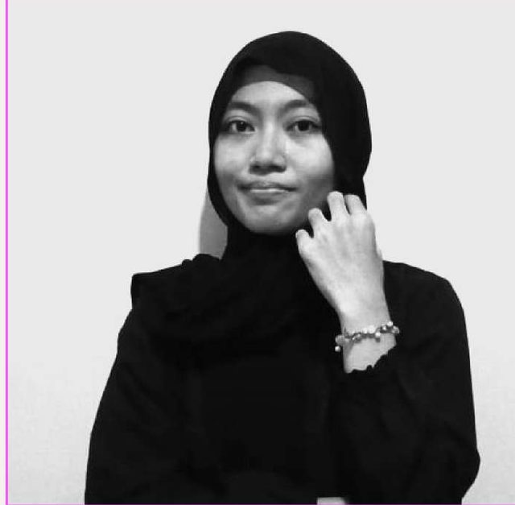

PT Channel E
Feb – Mar 2021
JOBDESK
Upcoming
Safta Sabrina
Saya Fresh Graduate Fisika dengan spesialisasi Fisika Komputasi dan memiliki ketertarikan tinggi pada Data Analysis, Data Science, Machine Learning, Analisis Numerik, dan Business Intelligence. Terampil menggunakan Python (Pandas, Matplotlib, Scikit-learn), XRD, dan Power BI, visualisasi data, serta metode numerik, dengan pengalaman langsung dalam mengolah, menganalisis, dan memvisualisasikan dataset ilmiah maupun data dunia nyata.
Memiliki kemampuan analitis dan pemecahan masalah yang baik, serta mampu mengubah data mentah menjadi insight yang bermakna untuk mendukung pengambilan keputusan berbasis data. Pengalaman profesional di bidang desain grafis juga memperkuat kemampuan dalam menyampaikan informasi yang kompleks melalui visualisasi yang jelas, menarik, dan efektif.

S1 Fisika
Feb – Mar 2021
Feb – Jun 2025
Juni – Sep 2026
Feb – Mar 2021
Upcoming
Feb – Jun 2025
UPCOMING
Juni – Sep 2026
UPCOMING
Menggunakan KNN dan transformasi citra RGB ke ruang warna HSI.
Project organisasi yang berfokus pada analisis dan rekapitulasi data hasil post-test PKKMB FMIPA UNJ 2023.
Proyek penelitian lingkungan ini dilakukan sebagai bagian dari Orientasi Anggota Baru Kelompok Peneliti Muda (KPM) UNJ 2023. Penelitian ini bertujuan untuk membandingkan kualitas air antara ekosistem sungai dan selokan di sekitar kawasan Vila Silma, Cisarua, Bogor, serta menganalisis dampak aktivitas manusia terhadap tingkat pencemaran air.
Project organisasi yang berfokus pada analisis dan rekapitulasi data hasil post-test PKKMB FMIPA UNJ 2023.
Sertifikat kepanitiaan sebagai staf acara dan tim data peneliti.